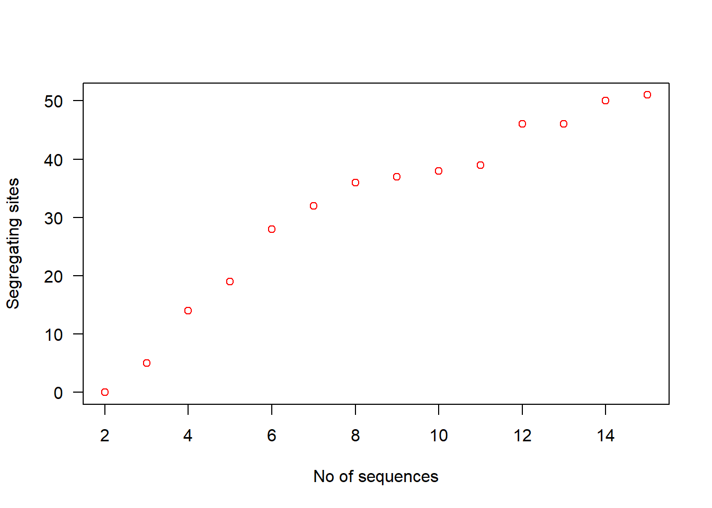
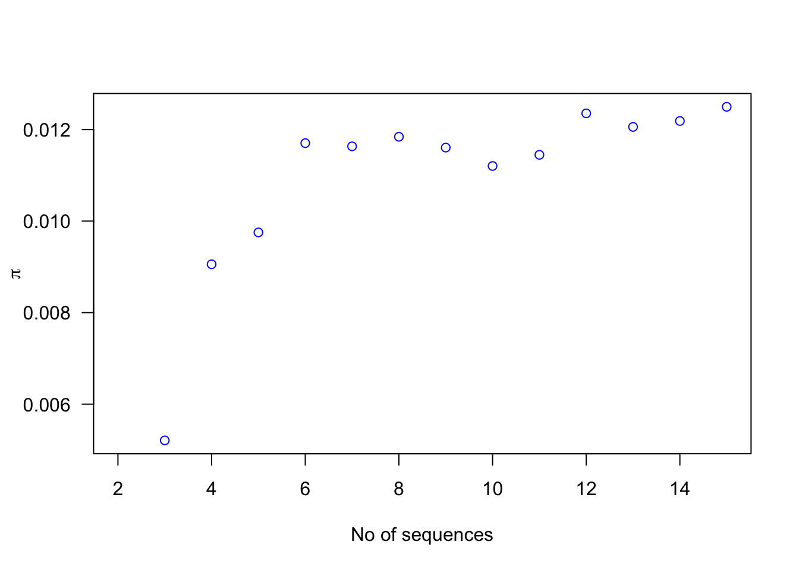

1.2 Working with a larger dataset
As we have seen in previous tutorials, R packages often come with nice, ready-to-use datasets. ape and pegas are no exception. We will turn to the woodmouse dataset next to learn how we can work with larger data than just 3, 40 bp sequences. To load the data, you need to do the following:
What is this data? It is 15 sequences the mitochondrial cytochrome b gene of the woodmouse (Apodemus sylvaticus), a very cute and widespread rodent in Europe. The data is a subset of a study by the authors of pegas.
We can easily view the woodmouse sequences using alview.
However, you can see already that with this much data, looking at the alignment directly is not that practical - and we certainly wouldn’t ask you to count all the polymorphic sites here! Instead it makes much more sense to use the R functions we just covered to calculate the statistics of interest.
With a larger dataset, we can also manipulate our woodmouse DNAbin object a bit more directly. Although we do not see a matrix of aligned DNA sequences when we call woodmouse, we can still treat it like one - including using R indices. In this sense, the rows of our matrix are our individuals and the columns are the number of base pairs in our sequence. So for example:
This command will return only the first 10 sequences. Manipulating the columns will also change how much of the sequence we retain:
In the next section, we will use this to demonstrate how sample size can influence our estimates of nucleotide diversity and segregating sites.
1.2.1 Sample size and sequence statistics
First of all, let’s turn our attention to the number of segregating sites. How does using different numbers of sequences effect this? We can loop through different values of the maximum number of sequences. So we will first use 2 sequences, then 3, then 4 and so on, until we use all 15.1
# initialise vector for storing values
# we start by comparing 2 sequences, then increase to 3 etc.
# so we will end up with 14 comparisons
ss <- rep(NA, 14)
# get segregating sites for an increasing number of sequences
for(i in 1:(length(ss))){
# subset to only the first i+1 sequences
woodmouse_sub <- woodmouse[1:i+1,]
# calculate n seg.sites in the subset
ss[i] <- length(seg.sites(woodmouse_sub))
}Have a look at the ss vector this creates - it is the number of segregating sites for each maximum number of sequences. However, the relationship is a lot easier if we plot it:
# plot figure
plot(2:15, ss, col = "red", xlab = "No of sequences", ylab = "Segregating sites", las = 1)
From the figure, we can see that the number of segregating sites grows as we increase the number of sequences, i.e., segregating sites are biased by sample size. It increases our probability of observing a polymorphism, and since all polymorphisms are given equal weighting in the calculation of the number of segregating sites, any polymorphism will increase the value by 1.
So what do we see if we repeat the same code, but this time for nucleotide diversity or \(\pi\)?
nd <- rep(NA, 14)
# get segregating sites for an increasing number of sequences
for(i in 1:(length(nd))){
# subset to only the first i+1 sequences
woodmouse_sub <- woodmouse[1:i+1,]
# calculate nuc.div in the subset
nd[i] <- nuc.div(woodmouse_sub)
}This loop is similar to the previous one, except this time we use the nuc.div function instead. We can also plot the relationship here:
# plot figure
plot(2:15, nd, col = "blue", xlab = "No of sequences", ylab = expression(pi), las = 1)
There is no obvious relationship here - nucleotide diversity is an estimate of the average difference among sequences so it only becomes more precise with increased numbers of sequences - it is not so easily biased. Unlike segregating sites, polymorphisms are also not equally weighted; rare polymorphisms only contribute slightly to nucleotide diversity as most sequences will be similar at this position, whereas more common polymorphisms mean most sequences will differ at a position.
1.2.2 Inferring evolutionary processes using Tajima’s D
The number of segregating sites and \(\pi\) are essentially estimates of the population mutation rate \(\theta\) - i.e. \(4N_e\mu\). Under ideal conditions - i.e. neutrality, our two estimates of \(\theta\) should be equivalent to one another. Differences between these estimates suggest either the action of selection or some kind of demographic change.
Tajima’s D is a statistical test that allows us to actually investigate this. We can calculate it very easily in R using the tajima.test function in pegas.
This produces a list with three elements. The first is an estimate of Tajima’s D and the other two are p-values assessing the significance of the statistic. Remember that to say whether a statistic is significant or not, the commonly used (arbitrary) threshold is p<0.05. The two p-values are both similar here and also both show that there is no significant deviation from zero.
1.2.2.1 A bit more about \(\pi\), \(s\) and Tajima’s D
In the assignment, you will be asked to explain and interpret Tajima’s D. To get you started, we will briefly explain what we are testing for with a Tajima test, and how \(\pi\) and \(s\) can differ relative to each other. You can read more about the interpretation of—and math behind—Tajima’s D in the course book.
In a Tajima’s D test, we test if the population mutation rate parameter \(\theta\) estimated using \(\pi\) differs from \(\theta\) estimated from \(s\). D is a measure of the difference between these two estimates. Our statistical null model is that the two estimates are the same, i.e. that only the neutral mutation rate and effective population size affects \(\pi\) and \(s\) (see the book for details). Below is a very simple worked example of how different patterns in mutation can impact \(\pi\) and \(s\) differently.
Consider two populations of four individuals. In both populations, \(S=1\) and \(s = 0.17\):
Population 1:
AACAAG
AACAAG
AACAAG
AATAAG
Population 2:
AACAAG
AACAAG
AATAAG
AATAAG\(\pi\), however, will differ. In population 1, the total number of pairwise differences is 3, and the number of possible comparisons are 6, thus \(\Pi = 0.5\) and \(\pi = 0.08\) (don’t take my word for it, check it yourself!). In population 2, we have 4 pairwise differences, so \(\Pi = 0.67\) and \(\pi = 0.11\). So even though \(s\) is the same in both populations, \(\pi\) is different.
This is just a quick example and does not go into the biological significance of these differences (which you need to understand for this week’s assignment). For that, you will need to consult the book and lectures for this course.
Take a look at the code and see if you understand the following: why did we initialise the
ssvector with 14 values, not 15? Why do we usei+1for subsetting thewoodmousedata? Are there other ways we could have done this?↩︎